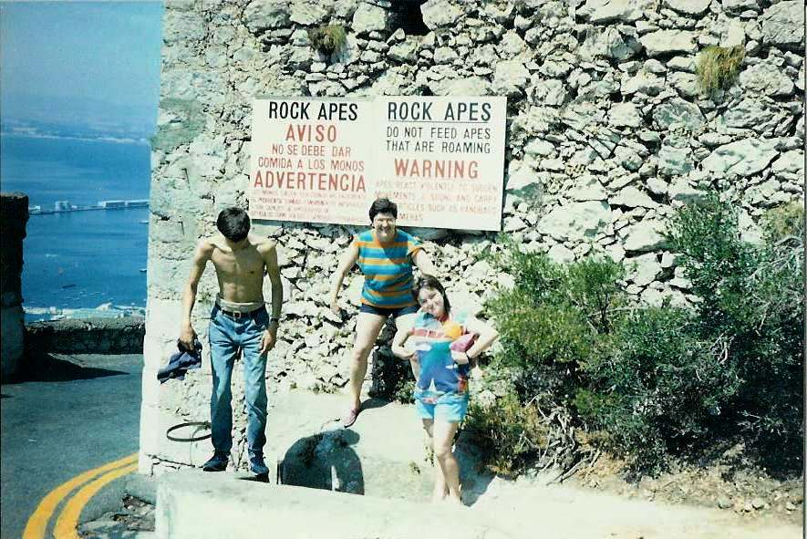

Inter Rail 1986 Day 12
Wednesday 3rd September 1986
Didn't wake up until 9.00am. Remembered I'd left my money belt out on the balcony all night so staggered out, collected it and went straight back to sleep until 10.30am. Eventually checked out of the hotel, having had a lovely bath at 11.55am

Headed straight to the London Bar and had beefburger, chips coffee and cake for lunch. Eventually roused ourselves and went up the cable car to the top of the Rock. The views were brilliant although you couldn't see Africa. There was loads of corrogated sheeting acting as a water catchment on the far side of the Rock plus a few tichy beaches.
Headed off along the path, past the old Moorish walls and steps towards St. Michaels Cave. Bought a tourist ticket and went inside. It beats Dan-Yr-Ogof entirely. The large upper chamber has been turned into a concert hall. Absolutely fantastic sights and sounds and was all lit up with different colours and Tchaikovsky playing in the background. Evan "that" bit of Swan Lake was heard.
Decided Brits on holiday resemble lemmings or sheep as we started an exodus into an area we shouldn't really have been in. Had a drink and then headed off for Ape's Den. Quite cute little creatures seemingly.
We then started a route march from one end of the island to other to get to the Upper Galleries. Turned out to be a series of tunnels and gun emplacements tunnelled out by a guy named Ince during the Great Siege in the 1700's. There was even a place to hold a banquet. The views of the other side of the island were quite good.
We then headed down, after a soft drink, to the Moorish Watchtower. Got a free commentary inside by a guy with a cut glass accent and there were also lifesize models with descriptions. Wandered back down into Gib Town and picked up our luggage which we'd left at the hotel. Went to the Angry Friar for another soft drink. We were in time to see the guards clocking off (i.e. standing 1 foot away from each other shouting) and then the last post as the Union Jack was lowered over the Governors residence.
Headed back to the Old Vic for a Vic double burger and chips. Then waited for a number three bus which took us to the frontier. We were waved through British customs and almost missed Spanish passport control. Jon had to claim he was carrying our allocation of cigarettes as he had 400 on him. We were just in time to catch the bus back to Algeciras as were Kevin and Michael. Had to pay over 200 pts for a seat reservation on the train. Our compartment appeared locked so we had to sit on the platform until that last minute before leaping onto the train. We eventually got into the compartment but it turned out not to be ours. A nasty drunk doped up the eyeballs (85g's of cannabis is legal in Spain) was in ours. Luckily the next comparment was empty so I went to sleep on the seat in the next one. Damn good night's sleep had for me.
{kind=link}
{kind=link}
{kind=link}
{kind=link}
{kind=link}
{kind=link}
{kind=link}
{kind=link}